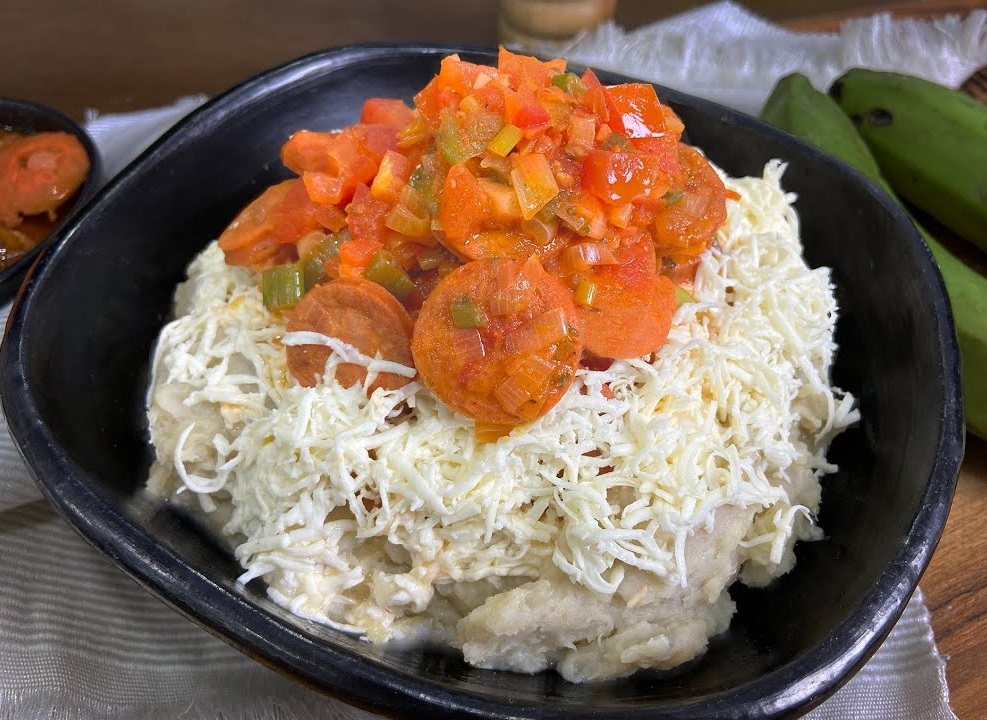

Recipe for the best Cayeye ever

How to Make Cayeye
Cayeye is also known as Cabeza de Gato and it's a traditional breakfast in the Caribbean coast of Colombia.It's basically mashed green plantains mixed with salty cheese.I added refrito to my recipe, because I like to add color to the dish.
Ingredients:
- 4 green plantains peeled and cut into pieces
- 2 tablespoons butter
- 1 tablespoon of oil
- 1 cup onion finely chopped
- 2 scallions finely chopped
- 2 to matoes diced
- 3 garlic cloves minced
- ½ teaspoon ground achiote
- Salt and pepper to taste
- Grated cheese to serve
Steps:
Here's a very brief overview of what you can expect when you make homemade cayeye:
- Cook the green bananas or green plantains until tender. Strain and mash.
- In a medium skillet over medium heat place the butter, onion, tomatoes, red bell pepper, garlic and achiote. Cook the mixture for about 7 minutes, and then add to the mashed plantains and set aside.
- To serve, place some cayeye on a plate and top with fried egg, shredded cheese and diced avocado.